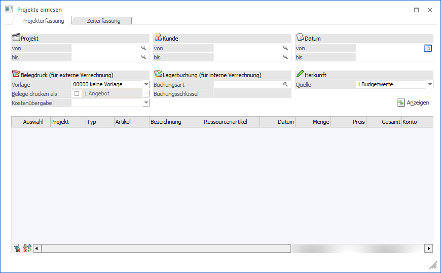

Über den Menüpunkt…
1 WinLine FAKT
1 Erfassen
1 Projektverwaltung
1 Projekte einlesen
… können die erfassten Budget-, bzw. Istwerte eines Projekts in einen Beleg übergeben bzw. die Artikel vom Lager abgebucht werden.

Das Fenster unterteilt sich in die folgenden Register, welche in den nachfolgenden Kapiteln beschrieben werden:
ü Register "Projekterfassung"
In dem
Register "Projekterfassung" können Erfassungszeilen aus der Projekterfassung in
einen Beleg übergeben bzw. Artikel vom Lager abgebucht werden.
ü Register "Zeiterfassung"
In dem
Register "Zeiterfassung" können Erfassungszeilen aus der Zeiterfassung an die
WinLine KORE übergeben bzw. Artikel vom Lager abgebucht werden.
Buttons
Ø Ok
Die Anwahl des Buttons "Ok" bzw. die Taste F5 hat je nach ausgewähltem Register unterschiedliche Auswirkungen:
ü Register "Projekterfassung"
Es
werden alle ausgewählten Projekterfassungen des Abrechnungstyps "0 - wird extern
verrechnet" oder "1 - wird intern verrechnet" in neue Belege übernommen. Hierbei
wird pro Personenkonto / Projekt ein einzelner Beleg erzeugt.
Handelt es sich
um Erfassungen des Typs "2 - wird intern verrechnet - kalkulierter Aufwand" oder
"3 - wird intern verrechnet - außerordentlicher Aufwand", so wird eine
Lagerbuchung erzeugt. Wurde keine Buchungsart angegeben, so erscheint eine
Abfrage, ob die Erfassungszeilen als "Übernommen" gekennzeichnet werden soll
(ohne Lagerbuchung).
ü Register "Zeiterfassung"
Es
werden die gewählten Zeiterfassungen je nach Einstellung in die WinLine KORE
übergeben (es erfolgt eine Buchung im KORE-Journal) und ggfs. eine Lagerbuchung
in der WinLine FAKT erstellt.
Ø Ende
Durch Drücken des Buttons "Ende" bzw. der Taste ESC wird das Fenster geschlossen und keine Übergabe bzw. Buchung durchgeführt.
Ø Filter bearbeiten
Durch Anklicken des Buttons "Filter bearbeiten" kann die Selektion der Erfassungszeilen nach frei definierbaren Kriterien eingeschränkt werden.